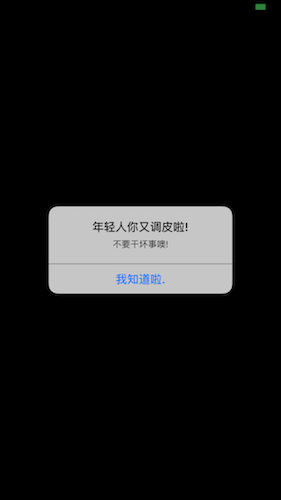

随着苹果的普及, 苹果应用市场也踊跃出了大量优秀的App, 但是很多App都会涉及到一些隐私数据, 比如下载歌曲, 会员广告等 进而促使一些研究逆向这方面的朋友们, 尝试着去修改App的里面的Vip功能, 微信抢红包插件, 会员去广告等等…
思考
作为一名iOS开发, 是不是除了日常的网络请求接口, 返回数据展示给UI.. 这重复的操作之外, 在细心去给隐私功能或者数据加一层防范呢?
加固方式
市面上常用的加固方式有以下几种
- 代码混淆. (类名、方法名 用#define的形式把class、function换成随机值)
- 防动态ptrace注入
- 防止tweak注入
- 破壳加固
- 防止Reveal查看视图
- 签名判断
……
今天来讲第六点, 签名判断, 以后有时间来讲其他几种方式.
有些逆向者, 将一些App核心功能hook掉, 然后打包成.deb出售, 或者用企业证书重签名之后, 在出售给需要的人.
虽然没有绝对的安全, 也避免不了, 但是我们要尽力防止一下, 对不对?
进入主题
下文主要是: -> #针对防止非越狱设备安装重签名的越狱机#
关于命令行CodeSign
通过命令行来获取App的CodeSignature,获取App的签名信息
codesign -vv -d Example.app
......
Identifier=ch.kollba.example
Format=bundle with Mach-O thin (arm64)
CodeDirectory v=20200 size=26663 flags=0x0(none) hashes=1324+5 location=embedded
Signature size=4336
Authority=iPhone Developer: Thomas Kollbach (7TPNXN7G6K)
Authority=Apple Worldwide Developer Relations Certification Authority
Authority=Apple Root CA
Signed Time=29.09.2014 22:29:07
Info.plist entries=33
TeamIdentifier=DZM8538E3E
......
|
对命令行感兴趣的朋友, 这里不做叙述, 可以看这篇文章代码签名探析
关于embedded.mobileprovision
appStore下载, 或者自己编译的App, 在.app里面都会存在embedded.mobileprovision这个文件. (ps:越狱后pp助手下载的不会有)
用命令行来看看里面是什么数据
vi Example.app/embedded.mobileprovision
......
<!DOCTYPE plist PUBLIC "-//Apple//DTD PLIST 1.0//EN" "http://www.apple.com/DTDs/PropertyList-1.0.dtd">
<plist version="1.0">
<dict>
<key>AppIDName</key>
<string>soyoungapp</string>
<key>ApplicationIdentifierPrefix</key>
<array>
<string>86NC63XXX</string>
</array>
<key>CreationDate</key>
<date>2015-11-16T11:13:33Z</date>
<key>Platform</key>
<array>
<string>iOS</string>
</array>
.......
|
ps:如果你不清楚如何将越狱App安装到非越狱设备设备, 可以看前面这篇文章
每个证书都会有一个Team, 我们根据Team里面的TeamIdentifier来判断 你签名的证书是否不一致, 不一致就代表被篡改了.
获取签名代码(CodeSignTask)
代码我已经写好了, 花了一下午的时间整理了下, 放到了我的Github上, 请戳链接
用法在AppDelegate.m里面在判断
- (BOOL)application:(UIApplication *)application didFinishLaunchingWithOptions:(NSDictionary *)launchOptions {
NSString *teamIdentifier = CodeSign->bundleTeamIdentifier();
if (teamIdentifier != nil &&
![teamIdentifier isEqualToString:@"你的TeamIdentifier"]) {
UIAlertView *alertView = [[UIAlertView alloc] initWithTitle:@"年轻人你又调皮啦!" message:@"不要干坏事噢!" delegate:nil cancelButtonTitle:@"我知道啦" otherButtonTitles:nil, nil];
[alertView show];
return NO;
}
....
}
|
关于实现
static NSString *bundleTeamIdentifier(void)
{
NSString *mobileProvisionPath = [[[NSBundle mainBundle] bundlePath] stringByAppendingPathComponent:@"embedded.mobileprovision"];
FILE *fp=fopen([mobileProvisionPath UTF8String],"r");
char ch;
if(fp==NULL) {
printf("file cannot be opened/n");
return NULL;
}
NSMutableString *str = [NSMutableString string];
while((ch=fgetc(fp))!=EOF) {
[str appendFormat:@"%c",ch];
}
fclose(fp);
NSString *teamIdentifier = nil;
NSRange teamIdentifierRange = [str rangeOfString:@"<key>com.apple.developer.team-identifier</key>"];
if (teamIdentifierRange.location != NSNotFound) {
NSInteger location = teamIdentifierRange.location + teamIdentifier.length;
NSInteger length = [str length] - location;
if (length > 0 && location >= 0) {
NSString *newStr = [str substringWithRange:NSMakeRange(location, length)];;
NSArray *val = [newStr componentsSeparatedByString:@"</string>"];
NSString *v = [val firstObject];
NSRange startRange = [v rangeOfString:@"<string>"];
NSInteger newLocation = startRange.location + startRange.length;
NSInteger newLength = [v length] - newLocation;
if (newLength > 0 && location >= 0) {
teamIdentifier = [v substringWithRange:NSMakeRange(newLocation, newLength)];
}
}
}
return teamIdentifier;
}
|
然后重签名后这个App, 你会发现就是这样子的了

防止后的图
当然这个方法不是特别好, 但是刚好也能用. 如果你有更好的办法, 欢迎@我
今天的新闻联播就到此结束. 欢迎阅读~
插播(╯3╰) 如果有人觉得有益想支持一下的, 可以请我喝小汽水噢, 我会在远方的地方, 看着皎洁的明月, 替你干杯的。[]~(￣▽￣)~*